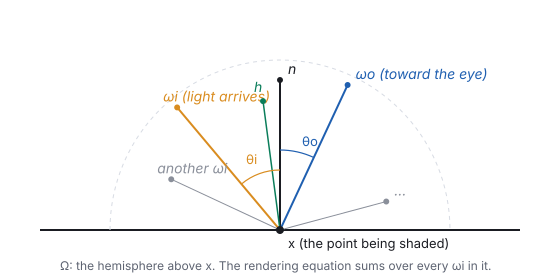
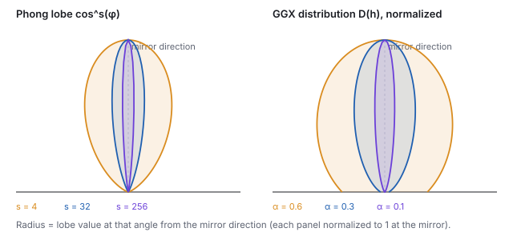

This chapter links to the course’s interactive demos and to original
papers on the open web, and it uses MathJax for its formulas. Read it
through the course website (or download the file and open it in a
browser); a Canvas inline preview will reach neither the demos nor the
math. All chapters.
Light Transport and PBR
CSS 551 · Advanced 3D Computer Graphics · course text
Course text · the rendering equation and physically based materials. Assigned by your offering’s course site; pairs with the lecture that finishes the illumination story.
A local illumination model computes a point’s color from the lights, the normal, and the eye, and nothing else in the scene. This chapter writes down the equation that balances the light energy instead, the rendering equation, reads it term by term, and rebuilds the material term on physical foundations: the BRDF, microfacets, Fresnel, and the two sliders every modern engine exposes. Every formula is evaluated by hand at least once, and every figure is computed from the same formulas. The history, from Whitted’s rays to Kajiya’s equation, is in the history chapter.
A local illumination model (Phong, as the course builds it) lights a
point from the lights, the normal, and the eye, and nothing else in the
scene; the ambient constant stands in for all the light that bounces.
Three things follow that no patch can fix.
It can reflect more light than arrives. Nothing in \(k_d\), \(k_s\) and the exponent \(s\) is tied to energy; Section 3 computes how much a plain Phong lobe can over-reflect.
It is not symmetric. Swapping the light and the eye should leave the amount of reflected light unchanged (Helmholtz reciprocity); the Phong specular term does not promise it.
It has no indirect light. The red wall of the Cornell box tints the white box beside it in a photograph and in a path-traced render; a local model paints the box white and adds a constant.
They are one gap: the local model never balances the light energy at a
point. The equation that does was written down by Kajiya in 1986
(the history chapter, section 3).
2 · The rendering equation, term by term

The vocabulary of one point. \(\Omega\) is the hemisphere above \(\mathbf{x}\); \(\omega_i\) is any direction light can arrive from, \(\omega_o\) the direction toward the eye, \(\mathbf{h}\) the unit vector halfway between them. A microfacet reflects \(\omega_i\) into \(\omega_o\) exactly when its normal is \(\mathbf{h}\), which is why \(\mathbf{h}\) appears in every microfacet term of Section 4.
Definition (the rendering equation)
With \(\omega_o\) the direction toward the eye, \(\omega_i\) a direction light arrives from, and \(\mathbf{n}\) the surface normal,
\[
L_o(\mathbf{x}, \omega_o) \;=\; L_e(\mathbf{x}, \omega_o) \;+\;
\int_{\Omega} f_r(\mathbf{x}, \omega_i, \omega_o)\, L_i(\mathbf{x}, \omega_i)\,
(\mathbf{n}\cdot\omega_i)\, d\omega_i .
\]
Read it in words, one factor at a time.
Symbol
Name
Meaning
\(L_o(\mathbf{x},\omega_o)\)
outgoing radiance
the light leaving \(\mathbf{x}\) toward the eye: the number the pixel will show
\(L_e(\mathbf{x},\omega_o)\)
emitted radiance
nonzero only on light sources; the ceiling panel of the Cornell box
\(L_i(\mathbf{x},\omega_i)\)
incoming radiance
the light arriving at \(\mathbf{x}\) from direction \(\omega_i\); it is some other point’s \(L_o\)
\(f_r\)
BRDF
the material: what fraction of light from \(\omega_i\) leaves toward \(\omega_o\) (Section 3)
\(\mathbf{n}\cdot\omega_i\)
cosine factor
light arriving at a grazing angle is spread over more surface, so each unit of surface gets less
\(\int_\Omega \dots d\omega_i\)
the hemisphere integral
add up the contributions of every incoming direction
It is hard for one reason: \(L_i\) on the right is some other
point’s \(L_o\). Light bounces, so the equation refers to itself,
and the unknown appears on both sides. That self-reference is exactly
the indirect light the local model lacks: the red wall’s \(L_o\)
is the white box’s \(L_i\).
Worked example (the integral as a sum)
Replace the continuous sky by three small distant lights, so the
integral becomes a sum, and take a matte (Lambertian) surface with
albedo \(\rho = 0.6\), whose BRDF is the constant \(f_r = \rho/\pi = 0.191\)
(Section 3 says why the \(\pi\) is there). The point does not emit.
light
\(L_i\)
angle to \(\mathbf{n}\)
\(\mathbf{n}\cdot\omega_i\)
\(f_r\, L_i\, (\mathbf{n}\cdot\omega_i)\)
1
2.0
20°
0.940
\(0.191\times2.0\times0.940 = 0.359\)
2
0.8
60°
0.500
\(0.191\times0.8\times0.500 = 0.076\)
3
0.5
75°
0.259
\(0.191\times0.5\times0.259 = 0.025\)
\(L_o\)
0.460
Two things to notice. The cosine factor, not the BRDF, is what makes
light 3 nearly irrelevant: it is grazing. And \(L_o\) does not depend on
\(\omega_o\) at all, because a Lambertian BRDF is constant; that is the
definition of matte. Add a glossy term and the third column would gain a
factor that peaks near the mirror direction of each light.
3 · The BRDF, and why Phong is not one
Definition (BRDF)
The bidirectional reflectance distribution function
\(f_r(\omega_i, \omega_o)\) is the ratio of the radiance leaving toward
\(\omega_o\) to the irradiance arriving from a small cone around
\(\omega_i\). Its units are inverse steradians. A physically valid BRDF
satisfies two laws:
Energy conservation: for every \(\omega_o\), \(\int_\Omega f_r(\omega_i,\omega_o)\,(\mathbf{n}\cdot\omega_i)\,d\omega_i \le 1\). A surface cannot reflect more than it receives.
The simplest BRDF is the constant one. If a matte surface reflects a
fraction \(\rho\) of the light it receives, equally in all directions,
then the energy law forces \(f_r = \rho/\pi\), because
\(\int_\Omega (\mathbf{n}\cdot\omega_i)\,d\omega_i = \pi\) (the cosine
integrated over the hemisphere). That is where the \(\pi\) in the
worked example above came from, and it is a first sign of the
difference between an ad hoc model and a physical one: in Phong,
\(k_d\) is a free number; here, \(\rho/\pi\) is a number tied to a law.
Worked example (how much light a Phong lobe reflects)
Take the Phong specular term with \(k_s = 1\) and exponent \(s\), light
arriving straight down the normal, and ask how much of it leaves in
total. The mirror direction is then the normal itself, so the lobe is
\(\cos^s\theta\) and the outgoing energy is
\[
\int_\Omega \cos^s\theta \,\cos\theta\, d\omega \;=\;
2\pi \int_0^{\pi/2} \cos^{s+1}\theta \,\sin\theta\, d\theta \;=\; \frac{2\pi}{s+2}.
\]
\(s\)
1
4
8
32
128
reflected / arriving
2.094
1.047
0.628
0.185
0.048
A broad lobe (\(s \le 4\)) sends out more light than came in; a sharp
one sends out almost none. Neither is what a real material does.
“Normalized Phong” fixes this by multiplying the lobe by
\((s+2)/2\pi\), and that normalization is the first step toward the
physically based models below: a BRDF whose brightness and width are
tied together, so an artist who makes a highlight sharper automatically
makes it brighter, as a real surface does.
4 · Microfacets: D, G and F
Physically based rendering (PBR) models a rough surface as a field of
microscopic mirrors, the microfacets. Light arriving from
\(\omega_i\) leaves toward \(\omega_o\) only off the facets whose normal
is the half-vector \(\mathbf{h}\); the rest reflect elsewhere, are
shadowed, or shadow their neighbors. The Cook–Torrance specular
BRDF collects those three effects into three factors:
Definition (Cook–Torrance specular BRDF)
\[
f_r^{\text{spec}}(\omega_i,\omega_o) \;=\; \frac{D(\mathbf{h})\, G(\omega_i,\omega_o)\, F(\omega_i,\mathbf{h})}
{4\, (\mathbf{n}\cdot\omega_i)(\mathbf{n}\cdot\omega_o)} ,
\]
where \(D\) is the fraction of facets facing \(\mathbf{h}\) (the
normal distribution), \(G\) the fraction of those not shadowed
or masked, \(F\) the fraction of light a facet actually reflects
(Fresnel), and the denominator converts from facet area to
surface area.
4.1 D: where the facets point
The modern default is GGX (also called Trowbridge–Reitz), with a
single roughness parameter \(\alpha\):
Left: \(D\) for four roughnesses. At \(\alpha = 0.1\) the peak is 31.8 and the curve has dropped below 0.01 by 25°; at \(\alpha = 1\) every facet direction is equally likely and \(D = 1/\pi\) everywhere. The area under each curve (weighted by the cosine) is 1: \(D\) is a distribution, and that is the normalization Phong lacked. Right: Schlick’s Fresnel curve. Plastic reflects 4 % head-on and 41 % at 80°; iron starts at 56 %; every material reaches 100 % at grazing.

The same three sharpness levels as lobes around the mirror direction, each normalized to 1 at the peak. GGX keeps a longer tail than a cosine power of the same peak width, which is the visible difference between a Phong highlight (a bright dot with a hard edge) and a GGX one (a dot with a halo). This is the plot the BRDF-lobes demo draws.
4.2 G: shadowing and masking
Facets hide one another. \(G\) is the fraction of facets that are both
lit (not shadowed from \(\omega_i\)) and visible (not masked from
\(\omega_o\)); the Smith form assumes the two are independent and
multiplies one factor per direction. For GGX the exact per-direction
factor is
Near the normal \(G_1 \approx 1\); at grazing angles on rough surfaces
it falls toward 0, which is what keeps the denominator’s
\(1/(\mathbf{n}\cdot\omega)\) from blowing up at the silhouette.
4.3 F: Fresnel
A dielectric reflects a few percent head-on and almost everything at
grazing incidence (look along a table top toward a window). Schlick’s
approximation captures it with one number per material, the reflectance
at normal incidence \(F_0\):
The table is the physics behind the metallic slider. Every dielectric
has nearly the same gray \(F_0\) of about 0.04 and gets its color from
light that enters the surface, scatters, and leaves diffusely. A metal
has a large, colored \(F_0\) and no diffuse term at all, because the
conduction electrons absorb whatever is not reflected.
Worked example (a full evaluation)
Put the normal along \(z\), the light at \(30^\circ\) on one side and
the eye at \(30^\circ\) on the other, a plastic (\(F_0 = 0.04\)) with
\(\alpha = 0.3\).
Compare the Lambertian term of a mid-gray plastic, \(0.6/\pi = 0.191\):
at the mirror direction the highlight adds about a quarter of the
diffuse value. Now move the light out to \(45^\circ\), leaving the eye
at \(30^\circ\). Then \(\mathbf{h} = (-0.131, 0, 0.991)\), tilted
\(7.5^\circ\) from the normal; \(D\) drops to 2.574, \(G\) to 0.971,
\(F\) rises slightly to 0.0404, and
\(f_r^{\text{spec}} = 0.0412\). And at the original geometry with a
rougher surface, \(\alpha = 0.6\): \(D = 0.884\), \(G = 0.944\),
\(f_r^{\text{spec}} = 0.0111\), a quarter of the smooth value. The
highlight got dimmer as it got wider, with no separate brightness knob
to set: that is energy conservation doing the artist’s bookkeeping.
5 · Metallic and roughness
Every engine exposes the model above through two artist sliders on top
of a base color:
roughness sets \(\alpha\) (most engines use \(\alpha = \text{roughness}^2\) so that the slider feels linear; Unity’s smoothness is \(1 - \) roughness);
metallic blends between two material recipes. At 0 the surface is a dielectric: a diffuse term \(\text{base}/\pi\) under a weak white specular with \(F_0 = 0.04\). At 1 it is a metal: no diffuse term and a specular with \(F_0 = \text{base}\).
The model of this chapter, rendered by a forty-line ray marcher in the figure generator: one directional light plus a two-tone environment (bright sky above the horizon, dark ground below), Lambert diffuse, GGX \(D\), Smith \(G\), Schlick \(F\), gamma 2.2. Across: roughness 0.1, 0.3, 0.5, 0.7, 0.9. Down: metallic 0, 0.25, 0.5, 0.75, 1. The dielectric row keeps its base color in the shadow side, because the diffuse term is there; the metal row goes dark except where it reflects the light and the sky, and those reflections are tinted by the base color, because \(F_0\) is. The horizon line visible on the plastic spheres is real: Fresnel makes even plastic a weak mirror.
These are the sliders in Unity’s Standard Shader, and the same
parameterization is what glTF and every modern renderer exchange. That
agreement is the practical payoff of PBR: a material authored once
looks the same in every engine, under any lighting, because the numbers
mean physical things rather than tuning constants for one scene.
See it liveBRDF lobes:
the course’s Cornell scene with four material identities (a gold
metal teapot, an aluminum metal box, a pastel plastic bunny, a glossy
dielectric box) all wearing one plotted BRDF. Drop roughness and every
highlight tightens toward a mirror while the inset lobe needles; switch
Phong to GGX to compare the tails. The two mappings from roughness to
lobe width are not calibrated to each other; the demo shows shape, not
units.
6 · Solving the equation: path tracing and real time
The rendering equation is an integral equation with the unknown on both
sides, so it is solved by iteration or by sampling. Path
tracing estimates the integral at a pixel by Monte Carlo:
shoot a ray, at the hit point pick a random \(\omega_i\), weight the
bounce by \(f_r\,(\mathbf{n}\cdot\omega_i)\) divided by the probability
of having picked that direction, and recurse until the path reaches a
light or is terminated. Average many paths per pixel and the noise
falls as \(1/\sqrt{N}\). Every bounce is a sample of the same integral,
so indirect light, soft shadows, color bleeding and caustics come out
with no special cases; the price is hundreds of samples per pixel.
Real-time engines keep the local term (one BRDF
evaluation per light, exactly the worked example above) and
approximate the rest: an environment map or light probes stand in for
the incoming sky, screen-space or ray-traced reflections for the mirror
term, and a precomputed ambient-occlusion or irradiance volume for the
diffuse bounce. Since 2018 hardware ray tracing has moved parts of that
list back toward honest sampling, denoised, at a few samples per pixel.
Both routes evaluate the same \(f_r\); they differ in how much of the
hemisphere they can afford to look at.
7 · Exercises
Exercise 1 (the cosine factor)
Redo the three-light example with the same lights but a darker surface,
\(\rho = 0.3\). Then move light 1 to \(70^\circ\). Which change reduced
\(L_o\) more?
Solution
Halving \(\rho\) halves everything: \(L_o = 0.230\). Moving light 1 to
\(70^\circ\) (with \(\rho = 0.6\) again) changes its cosine from 0.940
to 0.342, its term from 0.359 to 0.131, and \(L_o\) from 0.460 to 0.232,
about the same loss. A grazing angle costs as much as a surface half as
reflective.
Exercise 2 (D is a distribution)
Evaluate GGX \(D\) at \(\mathbf{n}\cdot\mathbf{h} = 1\) for \(\alpha = 0.1\)
and \(\alpha = 1\). Explain why the second is \(1/\pi\).
Solution
At \(\mathbf{n}\cdot\mathbf{h} = 1\) the bracket is
\((\alpha^2 - 1) + 1 = \alpha^2\), so \(D = \alpha^2/(\pi\alpha^4) = 1/(\pi\alpha^2)\):
31.8 for \(\alpha = 0.1\) and \(1/\pi = 0.318\) for \(\alpha = 1\). With
\(\alpha = 1\) the bracket is 1 for every \(\mathbf{h}\), so \(D\) is
the constant \(1/\pi\): all facet directions equally likely, and the
constant that integrates to 1 against the cosine over the hemisphere
is \(1/\pi\), the same constant as the Lambertian BRDF.
Exercise 3 (Fresnel at the rim)
For plastic (\(F_0 = 0.04\)), at what angle between \(\mathbf{v}\) and
\(\mathbf{h}\) does Schlick’s \(F\) reach 0.5?
Solution
\(0.04 + 0.96\,(1 - c)^5 = 0.5\) gives \((1-c)^5 = 0.479\),
\(1 - c = 0.863\), \(c = 0.137\), an angle of \(82^\circ\). Plastic is
half a mirror only within eight degrees of grazing, which is why the
reflection of a window on a table top appears only when you look along
the table.
Exercise 4 (metallic in between)
A slider value of metallic 0.5 is common in beginners’ materials.
Using the blend formula of Section 5, say what such a surface is
physically, and why real materials are almost always at 0 or 1.
Solution
It is half a dielectric and half a metal: a diffuse term at half
strength under a specular whose \(F_0\) is the average of 0.04 and the
base color. No homogeneous material behaves so; the value is
meaningful only as an average over a surface that is partly metal and
partly not (dust on chrome, paint over steel), which is how texture
artists use it. A clean material is 0 or 1.